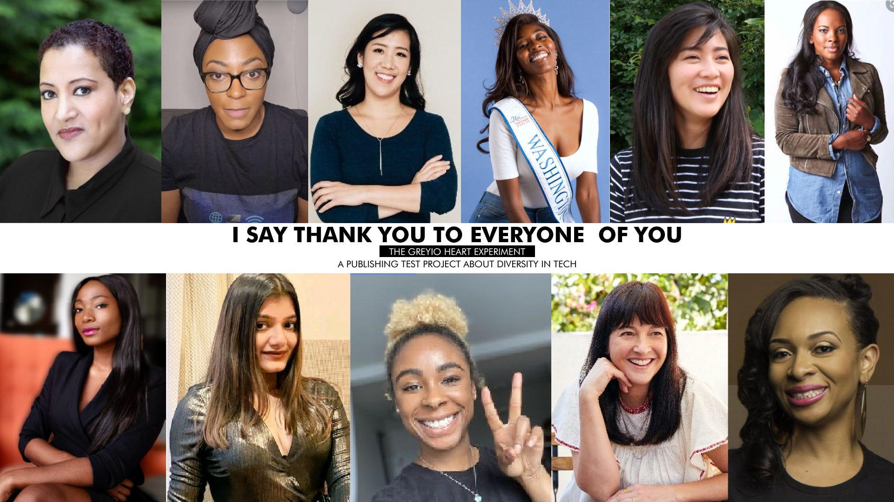
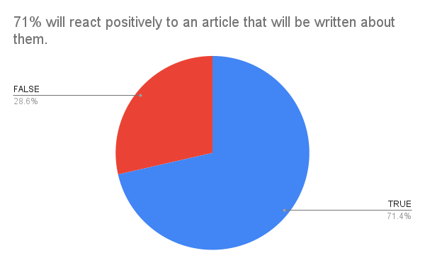

Thanks and First Publishing Report
The Greyio Heart Experiment a publishing experiment about Women in Tech


Today in my morning page that is handwritten using one of these recycled pieces of paper that sits in the desk of my Dorm as office, I have said how long time ago I have had the idea of doing on purpose things that matter to people by offering my skills for free. Back in those days, the first test of this idea of doing things for people was about graphic design, I was just designing creative graphics and sending them to the persons for who they were intended. During this first experiment, I learned that people responded positively as positive as asking me if I was open to graphic gigs but at that time I was highly pricing my works and I am still doing the same what was painful for those I offered free graphic works because they were not able to afford my services but all I was wanting is to help for free, being noticed and thanked was already a satisfaction and I was not expecting something else like money. That’s the same kind of experiment that I am running again but about writing great words about people who are doing their best and are making a ruckus in tech fields mainly women software engineers because I am now always trying to be specific about who is it for.
Then these articles of this publishing experiment called the Greyio Heart Experiment is for highlighting the work and path of great and thankful women in the tech industry and am glad to know that 71% of the women software engineers who were the subject of one article of this publishing experiment reacted positively to the article about them

They reacted positively because they gave a Love to the tweet that promoted the article in Twitter, commented and retweeted them like
But for being more specific I am tempted to reduce this experiment to these 11 women software engineers or a greater fixed number and making more article about each of them rather than making one article per women software engineer but it could make sense to take this path of publishing one article for the maximum number of a woman software engineer. From these two path that this publishing experiment could take, I don’t know what is the one which is the best path but for sure I am highly willing to continue to promote the profile of great women software engineer and I am starting to feel like I am being emotionally connected to those I have written about more than once. Maybe the analysis of metrics of this publishing experiment that I am actually doing could help me know which is the best path but whatever path will be the best writing is something that I could use for a given cause like getting more girls into tech. Then why not just commit to write a defined number of articles per week as my contribution to this nice cause of diversity in tech. That’s the core mantra behind this publishing experiment which is a non profit initiative which hide a huge opportunity for women to make an impactful contribution to the world by supporting something that matter to them both emotionally and financially because they will be sure that what they will get in return is way greater than what they have given as contribution.
I an thankful to all these great women about whom I have written about and did these work with sincerity even if my English is broken and my words cheap and worth nothing. The results of my satisfaction are the metrics below that illustrate how successful this publishing experiment is at small scale
I sincerely have more granular metrics more meaningful for highlighting the success of this publishing experiment but these data have names inside with numbers I don’t wanna publicly share them because they could hurt the status and feeling of these great women software engineer and frankly the Greyio Heart Experiment is about people not metrics.
Then you can take this article as the first report about the progress of this publishing experiment